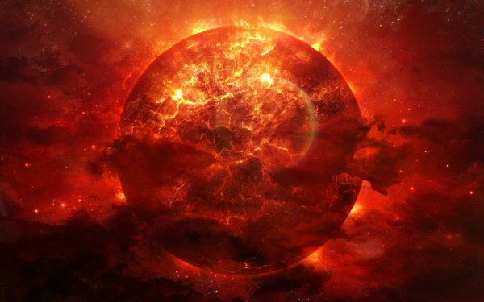

Похоже, именно планетой Gliese 581 вдохновлялся Данте, когда писал свою «Божественную комедию». Она обращается вокруг красного карлика,
во много раз меньшего нашего Солнца, светимость которого составляет лишь 1,3% от нашего светила.
Одна из ее особенностей в том, что одна сторона планеты всегда обращена к звезде, а другая смотрит в космос. Как наша Луна.
это делает ее невероятно интересной. Если вы выйдете на стороне планеты, обращенной к Солнцу, то испаритесь меньше, чем за секунду.
На другой стороне — замерзнете за это же время. В «зоне сумерек» между двумя крайностями теоретически можно жить, но эта жизнь будет похожа на ад.
когда планета с говорящим названием Крематория обращалась к звезде, и в это время на ее поверхности испепелялось все живое.
